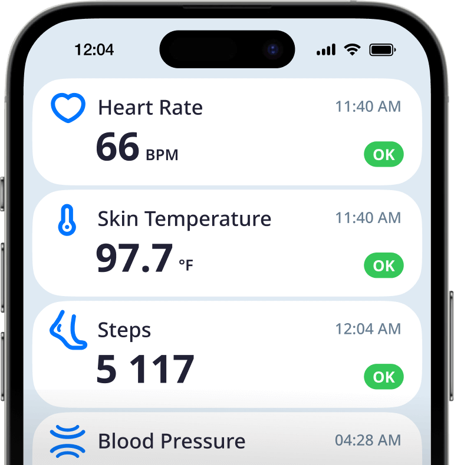
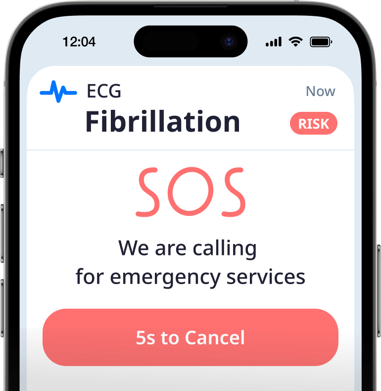
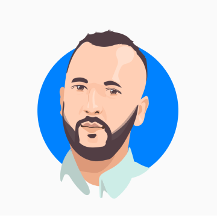
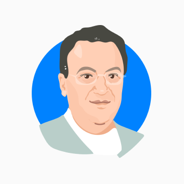

Innovative remote health monitoring for the elderly
User-friendly system for clinics and patients to constantly monitor vital signs and react in time, so older adultstruly live their lives to the full.
We help the elderly to say 'not yet' to CVD
Cardiovascular disease remains the leading cause of death among the elderly. Although remedies have been available for a long time, treatment often starts too late due to an outdated approach.
Infrequent monitoring of vitals using awkward instruments, no regular feedback between one medical visit and the next and low adherence to therapy. Healthcare providers still face a shortage of physicians and a lack of data to predict patient deterioration. Even implementing remote patient monitoring has failed to solve the problem.
Let's turn this situation around.
Meet NotYet
An innovative approach that combines modern technology and medical accuracy. NotYet provides essential support for doctors to respond rapidly when needed while letting the elderly take control of their health without disrupting their lifestyles. It takes healthcare and responsiveness to the next level.
NotYet is an RPM solution for clinics that consists of three key elements
-
Wristband
Read moreA wristband that continuously measures all the indicators needed to accurately interpret the patient's condition.
-
Mobile app
Read moreA mobile app with a simple interface and real-time feedback that sends the data to the cloud and then to the clinical platform.
-
Platform
Read moreDigital dash-boards and statistics that allows the physician to thoroughly and simultaneously monitor large numbers of patients.
Wristband
An elegant device for continuous multi-parameter monitoring. It provides complete data and doesn't interfere with active lifestyle.
-
- Blood Pressure (Auscultatory)
- Heart Rate
- Heart Rate Variability
- Steps, Activity, Sleep and Fall Identification
-
- Blood Oxygen
- Skin Temperature
- ECG (One lead)
-
- Blood Pressure (Optical) Planned for 2024
-
 Raspiratory Rate
Planned for 2024
Raspiratory Rate
Planned for 2024
- Bioimpedance Planned for 2024
-
Full range of measurements
NotYet monitors the most frequent health risks among the elderly by constantly measuring and correlating vital signs: heart rate, heart rate variability, blood pressure, ECG, skin temperature and blood oxygen. It also tracks activity, steps and sleep, and detects falls.
-
Highly accurate
All the sensors we use are highly precise, most notably the auscultatory method for measuring blood pressure, ensuring accuracy even in elderly people with problematic blood vessels.
-
Real-time, everywhere
Unlike the most commonly used medical measurement devices, NotYet tracks and transfers vitals to the platform in real-time. Elderly people can continue to travel, do sport and visit their loved ones while measurements are taken wherever they are and without disrupting their daily routine.
Mobile app
The NotYet app sends data to the platform while giving seniors control over their health and engaging them in its management.
-
Related interface
A simple, intuitive interface ensures usability even for people with impaired vision and fine motor skills. The app focuses on crucial components and clearly sets out the data, making the information easier to take in.
 -
Tracking measurements and conditions
The app gives real-time feedback and recommendations. It also includes a smart preventive SOS function which alerts caregivers and medical personnel when there's an emergency.
 -
Precautions, reminders and gamification
A conversational dialogue mode is at the heart of our interaction design. It increases involvement and collects data for more accurate interpretation. NotYet helps keep track of prescriptions, medication taken and scheduling of measurements.
Platform
A unified cloud platform eases clinic staff's workload and reacts by providing prompt alerts when needed.
-
Patient categorization
The smart patient prioritization system is based on an algorithm- and AI-based predictive risk model. Medical cardiology, neuroscience and gerontology experts were closely involved in developing NotYet and all its health insights are based on recommendations from leading associations (such as AHA, WHO, AACE and JNC).
-
Individual reference profile
Elderly people's normal vital signs can vary significantly, as they develop very specific conditions over time, due to individual differences, lifestyles, previous diseases and current medication. The platform takes into account over 30 factors and automatically calculates individual reference profiles for each user.
-
Enriched data
A large number of indicators and measurements create a fully comprehensive overview of the patient's condition, including activity and sleep. This allows physicians to provide more accurate diagnoses, use predictive analytics and promptly adjust treatment whenever required.
Why NotYet is a better solution
We are proud to have developed a solution that both patients and physicians want to use.
-

Advantages for patients:
- NotYet focuses on the needs and characteristics of the elderly, considering both user experience and measurement methods.
- NotYet gives real-time feedback and helps the elderly take control over their health.
- NotYet provides a range of measurements while supporting elderly people's lifestyles, replacing a large set of measuring devices that limit mobility and disrupt their daily routine.
-
Advantages for healthcare providers:
- NotYet increases medical staff use and involves physicians when needed.
- NotYet facilitates a preventive response to health complications, thereby reducing hospitalization and other treatment costs.
- NotYet increases patient satisfaction and engagement.
-
We love what we do
Our solution truly inspires us. We see a huge need for it, even among our friends and relatives. We want to provide them with tools that let them take control of their health, so they can confidently say 'Not yet!', which goes hand in hand with enabling them to live a full and enriching life. All of this has led to the founding of this startup.
-
The NotYet company is registered in Delaware. We are currently developing the project with the founders' original investment and aim to attract more. We expect to launch our product on the US market in the near future.
-
Lena Dobrokhotova
Founder, CEO, Marketing and ProductOver 20 years of experience in marketing, business development, and product.
Former CMO of Yandex Core Services (Russia's largest IT ecosystem).
Former Head of Growth and Head of BU at CityMobil (Uber's Russian competitor).
MBA from London Metropolitan University.
-

Ramil Teregulov
Co-founder, CTO (Hard & Software)10 years of experience in developing IoT solutions, wearable devices and medical equipment.
Co-founder of Mircod (mircod.com), a platform to automate the development of IoT devices and services.
-

Vladimir Zeldets
Co-founder, Head of Medical ResearchSenior Physician, Director of Quality Service, Emergency Department at Soroka University Medical Center, Israel.
Professor at the Faculty of Health Sciences, Ben Gurion University of the Negev, Israel.
Member of the Israel Cardiology Society and Israeli Association of Emergency Medicine.
-
Polina Molodtsova
Co-founder, Medical ResearchBiotechnology, Moscow Institute of Physics and Technology.
Medical Science, First Moscow State Medical University.